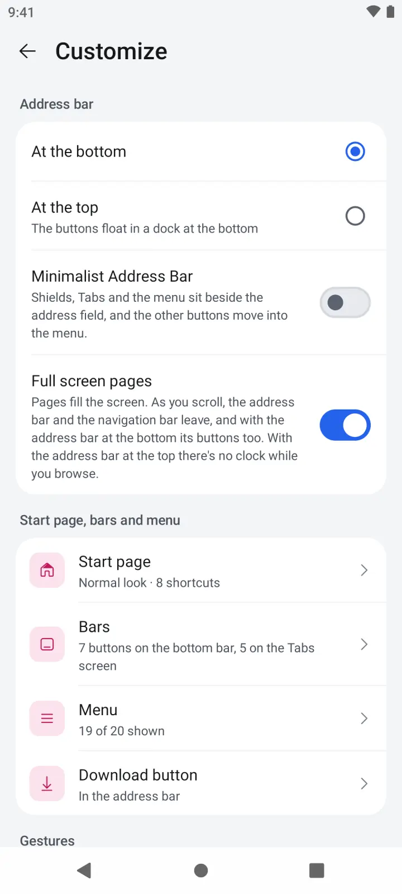
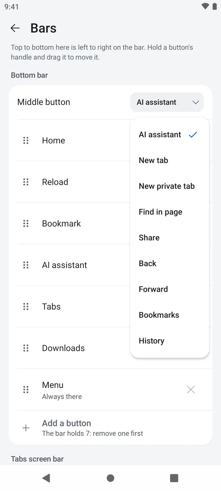
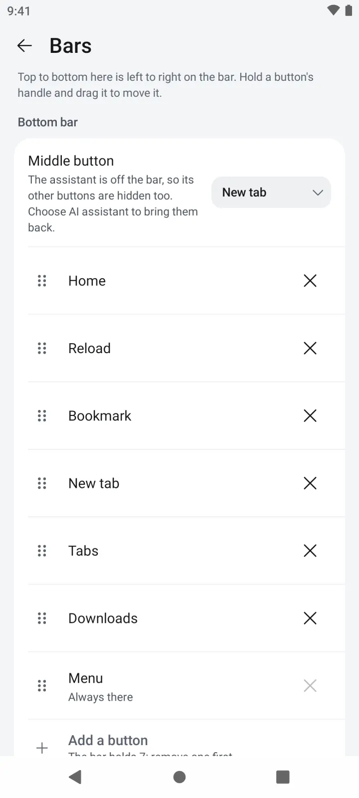
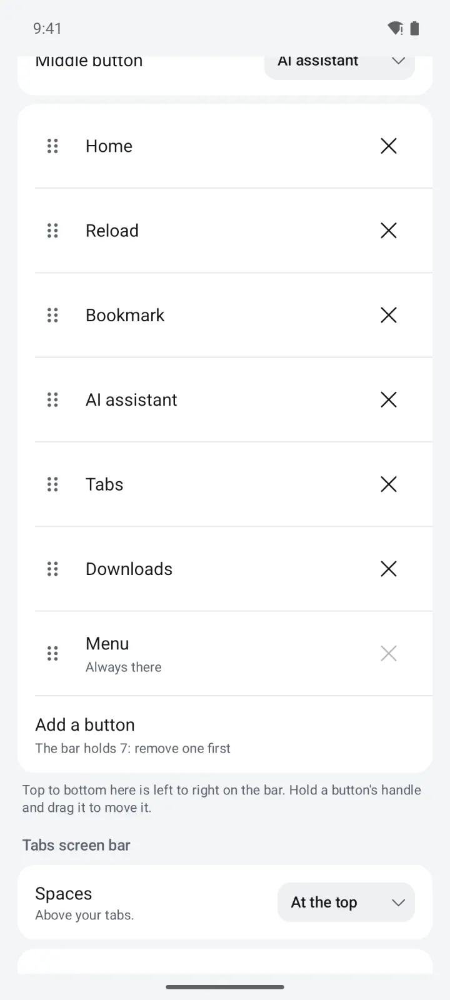
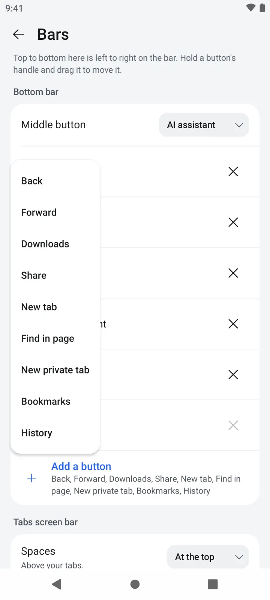
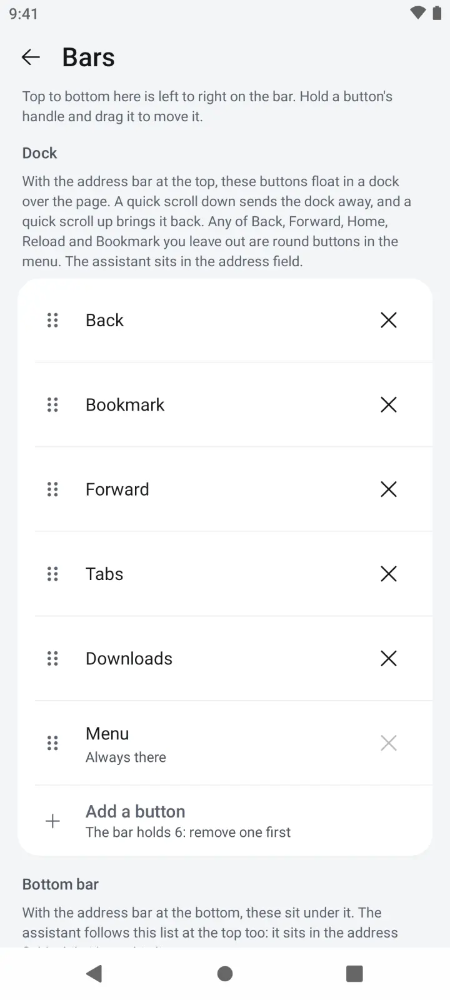
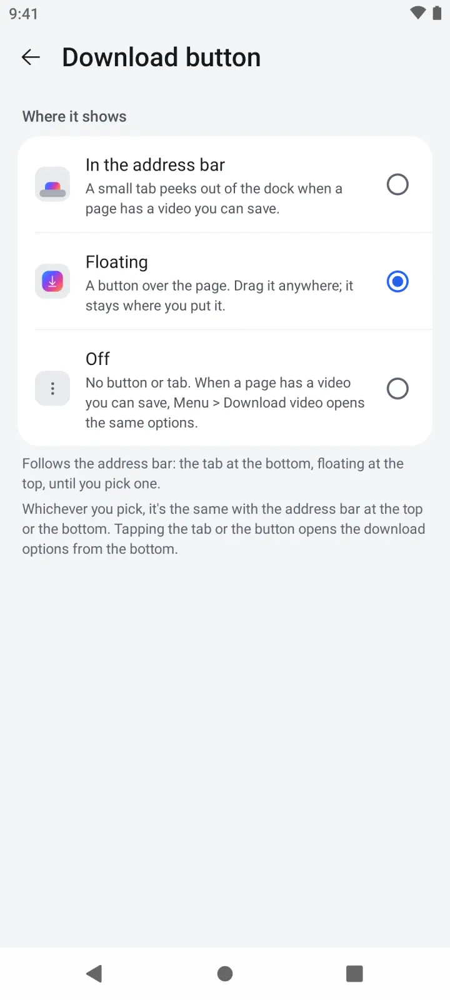
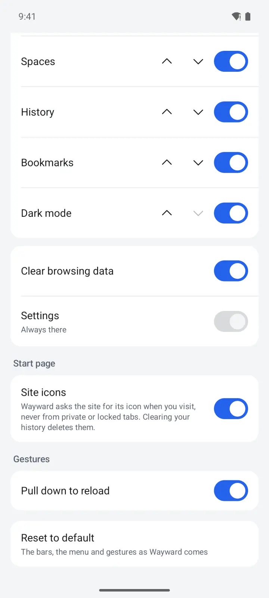

Change the bottom bar's buttons
How-to
Choose and arrange your bottom bar buttons. You can also replace the assistant in the middle.
Everything here is in Settings > Customize: the address bar at the top of it, and the bar's buttons in Bars, one of the rows under Start page, bars and menu.

The address bar
At the top of Customize, under Address bar:
- At the bottom (nearest your thumb) or At the top. With the address at the top, the buttons float in a dock at the bottom, with a list of their own (see the dock).
- Minimalist Address Bar puts everything in one slim row: see Use the Minimalist Address Bar.
- Full screen pages (Android 11 and later) lets pages fill the screen while the bars slide away as you scroll. Off, the bar shrinks to a slim strip instead. With the address bar at the top there's no clock anywhere while you browse, so the address sits at the very top (just under a camera's hole, if your phone has one); at the bottom the clock stays hidden on pages that fill the screen.
The middle button
The middle of the bar holds the AI assistant, as its colored stars. To put something else there:
- In Customize, tap Bars. Under Bottom bar, the card starts with Middle button: tap the box next to it.
- Pick one: AI assistant, New tab, New private tab, Find in page, Share, Back, Forward, Bookmarks or History.
Your pick sits in the gradient circle. If it was already elsewhere on the bar, it moves to the middle.

Picking anything but AI assistant takes the assistant off the bar, and out of everywhere else too: the start page's Ask AI button, the Ask AI items when you hold a link or picture, Explain on selected text, and the widget's Ask AI. The row then says so. Your chat is kept. To bring it all back, pick AI assistant as the middle button again (or tap The assistant is hidden in Settings > AI assistant).

The other buttons
In the same card, below the middle button, the bar's buttons are listed in order: top to bottom here is left to right on the bar, as the line at the top of Bars says.
- To move one, hold the six dots at the start of its row and drag it up or down. The rows it passes make room, and near the top or bottom of the screen the page scrolls with you. With TalkBack, each row has actions to move it one place, such as Move Home right.
- The X takes it off the bar.
Menu can't be removed (it's Always there, as the way to Settings), but you can move it.

To add one, tap Add a button (the blue row with a plus, at the end of the card) and pick it. The bar holds up to 7. The buttons you can add are Back, Forward, Share (the page's clean link, to any app), New tab, Find in page, New private tab, Bookmarks and History, plus any of the usual ones you took off. When the bar is full, the row turns grey and says The bar holds 7: remove one first.

The dock
With the address bar At the top (and the Minimalist Address Bar off), the buttons float in a rounded dock over the bottom of the page. A quick scroll down sends it away and a quick scroll up brings it back, as the line over its card says. Bars then starts with its card, Dock, above Bottom bar. By default it holds six: Back, Bookmark, Forward, Tabs, Downloads and Menu.
- Move, remove and add buttons as on the bottom bar. The dock holds up to 6, and Menu is Always there.
- Of Back, Forward, Home, Reload and Bookmark, the ones you leave off the dock are round buttons at the top of the menu, in that order, before Find. A button on the dock isn't in the menu's row as well (Find too, if you add it). Downloads is always in the menu.
- The assistant isn't a dock button: while it's on, its stars sit at the end of the address field. Whether it's on is still the Bottom bar's list, as the line over that card says.
- The Bottom bar card keeps its own buttons for when the address bar is at the bottom.

The download button
Download button, the last row under Start page, bars and menu, chooses how a video on a page is offered: In the address bar, Floating or Off. Until you pick one it follows the address bar: the tab at the bottom, Floating at the top, and the screen says so. See save a video from a page.


Gestures, and starting over
At the end of Customize:
- Pull down to reload, under Gestures: at the top of a page, pull it down and let go to reload it. Turn it off if it gets in your way.
- Reset to default, in red, puts the address bar, the bars' and the dock's buttons, the menu, the download button and gestures back the way Wayward comes. It asks Reset to default? first: Reset does it, Cancel leaves everything as it is. Your start page settings, and where the spaces sit on the Tabs screen, stay as they are.
